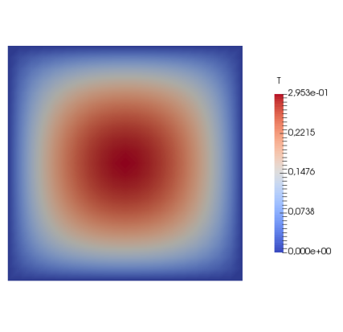

Heat Equation

Figure 1: Temperature field on the unit square with an internal uniform heat source solved with homogeneous Dirichlet boundary conditions on the boundary.
This example is also available as a Jupyter notebook: heat_equation.ipynb.
Introduction
The heat equation is the "Hello, world!" equation of finite elements. Here we solve the equation on a unit square, with a uniform internal source. The strong form of the (linear) heat equation is given by
\[ -\nabla \cdot (k \nabla u) = f \quad \textbf{x} \in \Omega,\]
where $u$ is the unknown temperature field, $k$ the heat conductivity, $f$ the heat source and $\Omega$ the domain. For simplicity we set $f = 1$ and $k = 1$. We will consider homogeneous Dirichlet boundary conditions such that
\[u(\textbf{x}) = 0 \quad \textbf{x} \in \partial \Omega,\]
where $\partial \Omega$ denotes the boundary of $\Omega$.
The resulting weak form is given by
\[\int_{\Omega} \nabla \delta u \cdot \nabla u \ d\Omega = \int_{\Omega} \delta u \ d\Omega \quad \forall \delta u \in \mathbb{T},\]
where $\delta u$ is a test function and $\mathbb{T}$ is a suitable test function space.
Commented Program
Now we solve the problem in Ferrite. What follows is a program spliced with comments. The full program, without comments, can be found in the next section.
First we load Ferrite, and some other packages we need
using Ferrite, SparseArraysWe start generating a simple grid with 20x20 quadrilateral elements using generate_grid. The generator defaults to the unit square, so we don't need to specify the corners of the domain.
grid = generate_grid(Quadrilateral, (20, 20));Trial and test functions
A CellValues facilitates the process of evaluating values and gradients of test and trial functions (among other things). Since the problem is a scalar problem we will use a CellScalarValues object. To define this we need to specify an interpolation space for the shape functions. We use Lagrange functions (both for interpolating the function and the geometry) based on the reference "cube". We also define a quadrature rule based on the same reference cube. We combine the interpolation and the quadrature rule to a CellScalarValues object.
dim = 2
ip = Lagrange{dim, RefCube, 1}()
qr = QuadratureRule{dim, RefCube}(2)
cellvalues = CellScalarValues(qr, ip);Degrees of freedom
Next we need to define a DofHandler, which will take care of numbering and distribution of degrees of freedom for our approximated fields. We create the DofHandler and then add a single field called u. Lastly we close! the DofHandler, it is now that the dofs are distributed for all the elements.
dh = DofHandler(grid)
push!(dh, :u, 1)
close!(dh);Now that we have distributed all our dofs we can create our tangent matrix, using create_sparsity_pattern. This function returns a sparse matrix with the correct elements stored.
K = create_sparsity_pattern(dh)441×441 SparseArrays.SparseMatrixCSC{Float64, Int64} with 3721 stored entries:
⠻⣦⡀⠀⢧⠀⠀⠀⠀⠀⠀⠀⠀⠀⠀⠀⠀⠀⠀⠀⠀⠀⠀⠀⠀⠀⠀⠀⠀⠀⠀⠀⠀⠀⠀⠀⠀⠀⠀⠀
⠀⠈⠻⣦⠈⢧⠀⠀⠀⠀⠀⠀⠀⠀⠀⠀⠀⠀⠀⠀⠀⠀⠀⠀⠀⠀⠀⠀⠀⠀⠀⠀⠀⠀⠀⠀⠀⠀⠀⠀
⠉⠓⠦⣄⡻⣮⡳⣄⠀⠀⠀⠀⠀⠀⠀⠀⠀⠀⠀⠀⠀⠀⠀⠀⠀⠀⠀⠀⠀⠀⠀⠀⠀⠀⠀⠀⠀⠀⠀⠀
⠀⠀⠀⠀⠙⢮⡻⣮⡳⣄⠀⠀⠀⠀⠀⠀⠀⠀⠀⠀⠀⠀⠀⠀⠀⠀⠀⠀⠀⠀⠀⠀⠀⠀⠀⠀⠀⠀⠀⠀
⠀⠀⠀⠀⠀⠀⠙⢮⡻⣮⡳⣄⠀⠀⠀⠀⠀⠀⠀⠀⠀⠀⠀⠀⠀⠀⠀⠀⠀⠀⠀⠀⠀⠀⠀⠀⠀⠀⠀⠀
⠀⠀⠀⠀⠀⠀⠀⠀⠙⢮⡻⢎⡳⣄⠀⠀⠀⠀⠀⠀⠀⠀⠀⠀⠀⠀⠀⠀⠀⠀⠀⠀⠀⠀⠀⠀⠀⠀⠀⠀
⠀⠀⠀⠀⠀⠀⠀⠀⠀⠀⠙⢮⡻⣮⡳⣤⠀⠀⠀⠀⠀⠀⠀⠀⠀⠀⠀⠀⠀⠀⠀⠀⠀⠀⠀⠀⠀⠀⠀⠀
⠀⠀⠀⠀⠀⠀⠀⠀⠀⠀⠀⠀⠙⣮⡻⣮⡳⣄⠀⠀⠀⠀⠀⠀⠀⠀⠀⠀⠀⠀⠀⠀⠀⠀⠀⠀⠀⠀⠀⠀
⠀⠀⠀⠀⠀⠀⠀⠀⠀⠀⠀⠀⠀⠀⠙⢮⡻⣮⡳⣄⠀⠀⠀⠀⠀⠀⠀⠀⠀⠀⠀⠀⠀⠀⠀⠀⠀⠀⠀⠀
⠀⠀⠀⠀⠀⠀⠀⠀⠀⠀⠀⠀⠀⠀⠀⠀⠙⢮⡻⣮⡳⣄⠀⠀⠀⠀⠀⠀⠀⠀⠀⠀⠀⠀⠀⠀⠀⠀⠀⠀
⠀⠀⠀⠀⠀⠀⠀⠀⠀⠀⠀⠀⠀⠀⠀⠀⠀⠀⠙⢮⡻⣮⡳⣆⠀⠀⠀⠀⠀⠀⠀⠀⠀⠀⠀⠀⠀⠀⠀⠀
⠀⠀⠀⠀⠀⠀⠀⠀⠀⠀⠀⠀⠀⠀⠀⠀⠀⠀⠀⠀⠹⢮⡻⣮⡳⣄⠀⠀⠀⠀⠀⠀⠀⠀⠀⠀⠀⠀⠀⠀
⠀⠀⠀⠀⠀⠀⠀⠀⠀⠀⠀⠀⠀⠀⠀⠀⠀⠀⠀⠀⠀⠀⠙⢮⡻⣮⡳⣄⠀⠀⠀⠀⠀⠀⠀⠀⠀⠀⠀⠀
⠀⠀⠀⠀⠀⠀⠀⠀⠀⠀⠀⠀⠀⠀⠀⠀⠀⠀⠀⠀⠀⠀⠀⠀⠙⢮⡻⣮⡳⣄⠀⠀⠀⠀⠀⠀⠀⠀⠀⠀
⠀⠀⠀⠀⠀⠀⠀⠀⠀⠀⠀⠀⠀⠀⠀⠀⠀⠀⠀⠀⠀⠀⠀⠀⠀⠀⠙⢮⡱⣮⡳⣄⠀⠀⠀⠀⠀⠀⠀⠀
⠀⠀⠀⠀⠀⠀⠀⠀⠀⠀⠀⠀⠀⠀⠀⠀⠀⠀⠀⠀⠀⠀⠀⠀⠀⠀⠀⠀⠙⢮⡻⣮⡳⣄⠀⠀⠀⠀⠀⠀
⠀⠀⠀⠀⠀⠀⠀⠀⠀⠀⠀⠀⠀⠀⠀⠀⠀⠀⠀⠀⠀⠀⠀⠀⠀⠀⠀⠀⠀⠀⠙⢮⡻⣮⡳⣄⠀⠀⠀⠀
⠀⠀⠀⠀⠀⠀⠀⠀⠀⠀⠀⠀⠀⠀⠀⠀⠀⠀⠀⠀⠀⠀⠀⠀⠀⠀⠀⠀⠀⠀⠀⠀⠙⢮⡻⣮⠳⣄⠀⠀
⠀⠀⠀⠀⠀⠀⠀⠀⠀⠀⠀⠀⠀⠀⠀⠀⠀⠀⠀⠀⠀⠀⠀⠀⠀⠀⠀⠀⠀⠀⠀⠀⠀⠀⠙⢦⡻⣮⡳⣄
⠀⠀⠀⠀⠀⠀⠀⠀⠀⠀⠀⠀⠀⠀⠀⠀⠀⠀⠀⠀⠀⠀⠀⠀⠀⠀⠀⠀⠀⠀⠀⠀⠀⠀⠀⠀⠙⢮⠻⣦Boundary conditions
In Ferrite constraints like Dirichlet boundary conditions are handled by a ConstraintHandler.
ch = ConstraintHandler(dh);Next we need to add constraints to ch. For this problem we define homogeneous Dirichlet boundary conditions on the whole boundary, i.e. the union of all the face sets on the boundary.
∂Ω = union(getfaceset.((grid, ), ["left", "right", "top", "bottom"])...);Now we are set up to define our constraint. We specify which field the condition is for, and our combined face set ∂Ω. The last argument is a function which takes the spatial coordinate $\textbf{x}$ and the current time $t$ and returns the prescribed value. In this case it is trivial – no matter what $\textbf{x}$ and $t$ we return $0$. When we have specified our constraint we add! it to ch.
dbc = Dirichlet(:u, ∂Ω, (x, t) -> 0)
add!(ch, dbc);We also need to close! and update! our boundary conditions. When we call close! the dofs which will be constrained by the boundary conditions are calculated and stored in our ch object. Since the boundary conditions are, in this case, independent of time we can update! them directly with e.g. $t = 0$.
close!(ch)
update!(ch, 0.0);Assembling the linear system
Now we have all the pieces needed to assemble the linear system, $K u = f$. We define a function, doassemble to do the assembly, which takes our cellvalues, the sparse matrix and our DofHandler as input arguments. The function returns the assembled stiffness matrix, and the force vector. Note that here f and u correspond to $\underline{\hat{f}}$ and $\underline{\hat{u}}$ from the introduction, since they represent the discretized versions. However, through the code we use f and u instead to reflect the strong connection between the weak form and the Ferrite implementation.
function doassemble(cellvalues::CellScalarValues{dim}, K::SparseMatrixCSC, dh::DofHandler) where {dim}We allocate the element stiffness matrix and element force vector just once before looping over all the cells instead of allocating them every time in the loop.
n_basefuncs = getnbasefunctions(cellvalues)
Ke = zeros(n_basefuncs, n_basefuncs)
fe = zeros(n_basefuncs)Next we define the global force vector f and use that and the stiffness matrix K and create an assembler. The assembler is just a thin wrapper around f and K and some extra storage to make the assembling faster.
f = zeros(ndofs(dh))
assembler = start_assemble(K, f)It is now time to loop over all the cells in our grid. We do this by iterating over a CellIterator. The iterator caches some useful things for us, for example the nodal coordinates for the cell, and the local degrees of freedom.
for cell in CellIterator(dh)Always remember to reset the element stiffness matrix and force vector since we reuse them for all elements.
fill!(Ke, 0)
fill!(fe, 0)For each cell we also need to reinitialize the cached values in cellvalues.
reinit!(cellvalues, cell)It is now time to loop over all the quadrature points in the cell and assemble the contribution to Ke and fe. The integration weight can be queried from cellvalues by getdetJdV.
for q_point in 1:getnquadpoints(cellvalues)
dΩ = getdetJdV(cellvalues, q_point)For each quadrature point we loop over all the (local) shape functions. We need the value and gradient of the test function δu and also the gradient of the trial function u. We get all of these from cellvalues. Please note that the variables δu, ∇δu and ∇u are actually $\phi_i(\textbf{x}_q)$, $\nabla \phi_i(\textbf{x}_q)$ and $\nabla \phi_j(\textbf{x}_q)$, i.e. the evaluation of the trial and test functions. However, to underline the strong parallel between the weak form and the implementation, this example uses the symbols appearing in the weak form.
for i in 1:n_basefuncs
δu = shape_value(cellvalues, q_point, i)
∇δu = shape_gradient(cellvalues, q_point, i)
fe[i] += δu * dΩ
for j in 1:n_basefuncs
∇u = shape_gradient(cellvalues, q_point, j)
Ke[i, j] += (∇δu ⋅ ∇u) * dΩ
end
end
endThe last step in the element loop is to assemble Ke and fe into the global K and f with assemble!.
assemble!(assembler, celldofs(cell), fe, Ke)
end
return K, f
endSolution of the system
The last step is to solve the system. First we call doassemble to obtain the global stiffness matrix K and force vector f.
K, f = doassemble(cellvalues, K, dh);To account for the boundary conditions we use the apply! function. This modifies elements in K and f respectively, such that we can get the correct solution vector u by using \.
apply!(K, f, ch)
u = K \ f;Exporting to VTK
To visualize the result we export the grid and our field u to a VTK-file, which can be viewed in e.g. ParaView.
vtk_grid("heat_equation", dh) do vtk
vtk_point_data(vtk, dh, u)
end1-element Vector{String}:
"heat_equation.vtu"Plain program
Here follows a version of the program without any comments. The file is also available here: heat_equation.jl.
using Ferrite, SparseArrays
grid = generate_grid(Quadrilateral, (20, 20));
dim = 2
ip = Lagrange{dim, RefCube, 1}()
qr = QuadratureRule{dim, RefCube}(2)
cellvalues = CellScalarValues(qr, ip);
dh = DofHandler(grid)
push!(dh, :u, 1)
close!(dh);
K = create_sparsity_pattern(dh)
ch = ConstraintHandler(dh);
∂Ω = union(getfaceset.((grid, ), ["left", "right", "top", "bottom"])...);
dbc = Dirichlet(:u, ∂Ω, (x, t) -> 0)
add!(ch, dbc);
close!(ch)
update!(ch, 0.0);
function doassemble(cellvalues::CellScalarValues{dim}, K::SparseMatrixCSC, dh::DofHandler) where {dim}
n_basefuncs = getnbasefunctions(cellvalues)
Ke = zeros(n_basefuncs, n_basefuncs)
fe = zeros(n_basefuncs)
f = zeros(ndofs(dh))
assembler = start_assemble(K, f)
for cell in CellIterator(dh)
fill!(Ke, 0)
fill!(fe, 0)
reinit!(cellvalues, cell)
for q_point in 1:getnquadpoints(cellvalues)
dΩ = getdetJdV(cellvalues, q_point)
for i in 1:n_basefuncs
δu = shape_value(cellvalues, q_point, i)
∇δu = shape_gradient(cellvalues, q_point, i)
fe[i] += δu * dΩ
for j in 1:n_basefuncs
∇u = shape_gradient(cellvalues, q_point, j)
Ke[i, j] += (∇δu ⋅ ∇u) * dΩ
end
end
end
assemble!(assembler, celldofs(cell), fe, Ke)
end
return K, f
end
K, f = doassemble(cellvalues, K, dh);
apply!(K, f, ch)
u = K \ f;
vtk_grid("heat_equation", dh) do vtk
vtk_point_data(vtk, dh, u)
endThis page was generated using Literate.jl.